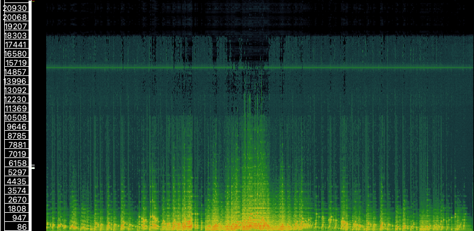
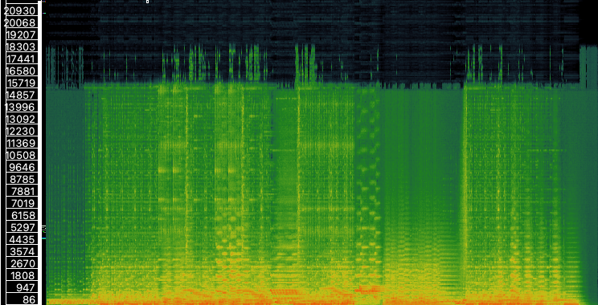
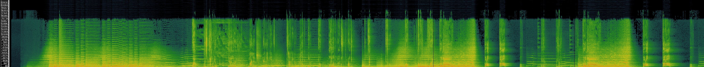
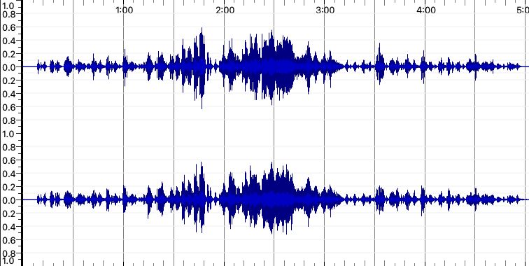
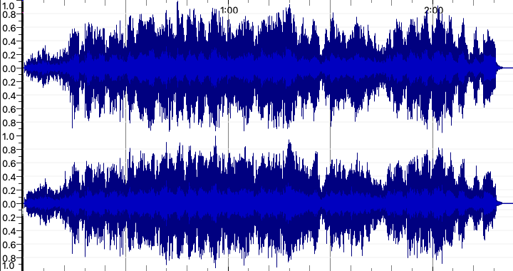
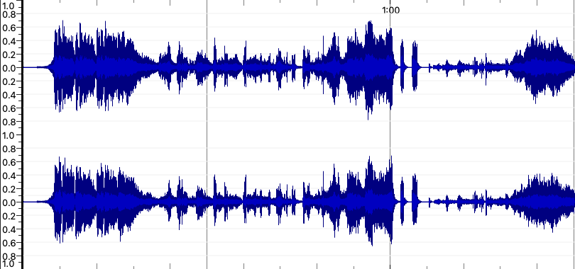

Clair de Lune
Define Dancing
Finding Nemo:The Musical Prologue
Clair de Lune
Define Dancing
Finding Nemo:The Musical Prologue
I think that the advantage of using time-frequency analysis over a waveform-based analysis is how it shows the density of different sections in a piece. It helps show volume in decibels which shows the density of music and vocals. This is very prominent when I was looking at the Prologue of Finding Nemo: The Musical and I can see the where the vocals are more prominent due to the difference in high and low notes. When using waveforms, volume and hertz can be measured but not in the detail of time-frequency where I can see the connection of background music and vocals on top which can be easily visualised at 23 seconds when Marlin starts talking. This is from the vibrations of sound and air pressure from the vocals that allow it to be prominent in the time-frequency analysis.